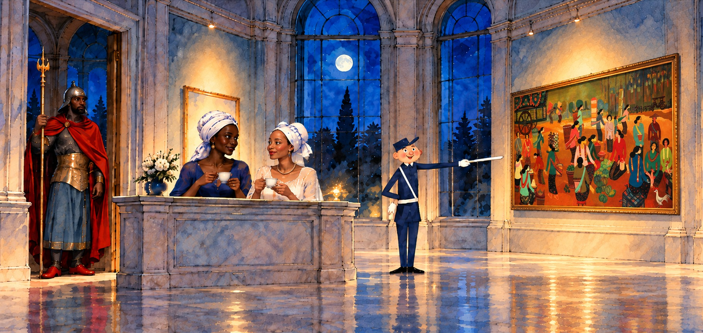

The Institute of Unnecessary Research
Museum After Dark

The Nubian Guard (1895) — Ludwig Deutsch (1855–1935). Oil on panel, 51.8 × 33.7 cm. Private collection. Source inspiration for the guard at the entrance.
Inner peace. Outer vigilance.
Portrait of Madeleine (1800) — Marie-Guillemine Benoist. The woman on the left, wearing a gold hoop earring.
Portrait of a Young Woman (late eighteenth century) — Artist unknown; previously attributed to Jean-Étienne Liotard. Saint Louis Art Museum. The woman on the right, wearing a pearl necklace.
This Is Paris (1959) — Miroslav Šašek. Source inspiration for the illustrated policeman.
Pasar (1973) — Batara Lubis. Oil on canvas, approximately 65 × 140 cm. The painting depicts stylized figures, baskets, produce, chickens, and a cart. The market recording is atmospheric sound, not a recording of the market depicted. Reference on MutualArt.